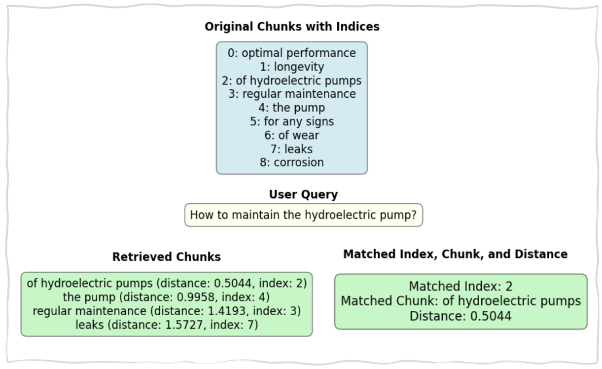

1. Content-aware Chunking (Document Specific Chunking)
Content-aware chunking encompasses a range of methods that leverage the context of the text to implement more precise chunking strategies. One such approach is sentence-aware chunking, which divides text into segments based on sentence boundaries while adhering to a specified maximum length for each chunk. This method ensures that each segment contains a complete sentence, preserving the grammatical integrity and contextual flow of the original text. This technique is particularly valuable for texts where a comprehensive understanding of each sentence is essential, as it utilizes the inherent characteristics of the content to enhance chunking accuracy.
1.1 Use Cases
- Technical Manuals and User Guides (Engineering): In engineering contexts, particularly when working with intricate technical manuals or detailed user guides, sentence-aware chunking aids in simplifying complex information into more digestible sections.
- Training Manuals and Procedures (Manufacturing): Training manuals and procedures in manufacturing often include essential information. Using sentence-aware chunking ensures that each procedural step is kept intact within a chunk, minimizing the risk of misinterpretation and improving clarity for operators and staff.
1.2 Content-aware Chunking Sample Code
1.3 Sample Content-aware chunking Result

×

1.4 Pros and Cons of Content-aware Chunking
| Pros | Cons |
|---|---|
| Offers high customizability, allowing the integration of new languages or domain-specific tokenizers. | May operate more slowly than simpler tokenizers due to its in-depth linguistic processing. |
| NLTK is a well-established library with extensive documentation and strong community support. | Might not be the optimal choice for tasks that prioritize semantic context over syntactic accuracy. |
| Utilizes pre-trained models to accurately identify sentence and word boundaries, making it especially effective for linguistically complex texts. | Segments text based on syntactic rules rather than semantic meaning, which can sometimes result in a loss of context. |